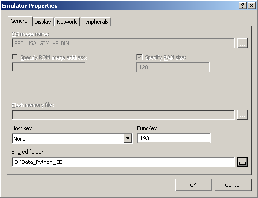
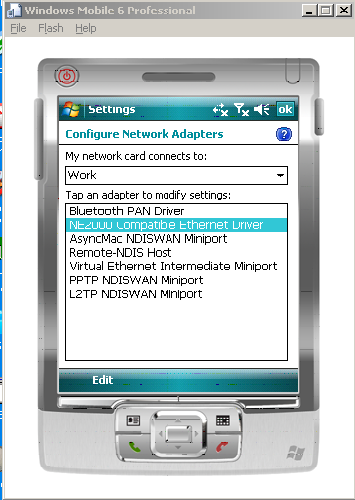
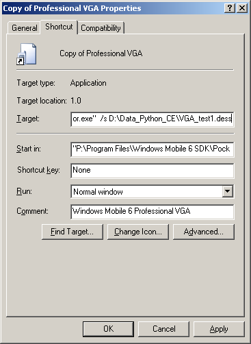
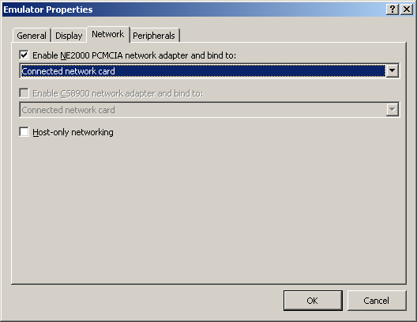
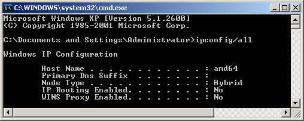
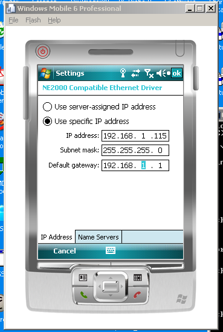
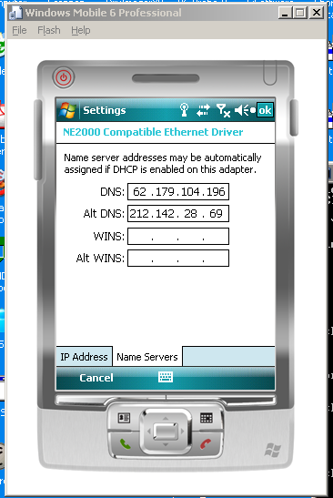

April 2008
Mobile PocketPyGUI 
Installatie Virtual Mobile
Het is niet geheel duidelijk welke de juiste volgorde is, want het is ons ook pas gelukt na een aantal herhaalde pogingen, de volgorde is in ieder geval zeer essentiëel. Voor zover wij kunnen interpreteren, zou de volgende volgorde moeten werken, de bestanden zijn te vinden op:
\\umcid01.umcn.nl\id_datamappen$\ID-spon\Python-CE
Installatie Python



Installatie Netwerk




klik op de antenne !!!